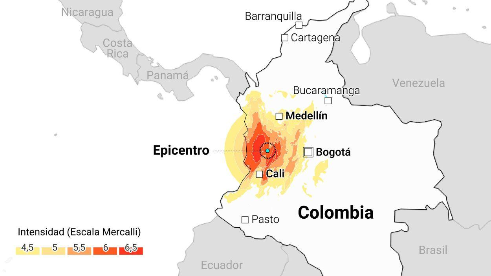

El mes de agosto se caracterizó por fuerte actividad sismica en zonas pobladas. En estas incluimos España en Granada, Indonesia en Yakarta, Japón en Tokyo, e inclusive Colombia en la zona del pacifico.

| Ciudad/Municipio | Magnitud | Muertos |
|---|---|---|
| Chocó | 7.,4 | 220 |
| Cali | 7,4 | 154 |
Este terremoto fue muy similar al de venezuela. Sin embargo, este fue a una profundidad de 110 KM bajo la superficie.
| Pais | Ciudad | Magnitud | Muertos |
|---|---|---|---|
| España | Granada | 4,8 | 0 |
| China | Tibet | 4,9 | 126 |
La magnitud está medido por la escala de richter, que es una escala exponencial.
Visita la página de EL MUNDO para conocer mas de este caso y otros que ocurren al rededor del mundo!